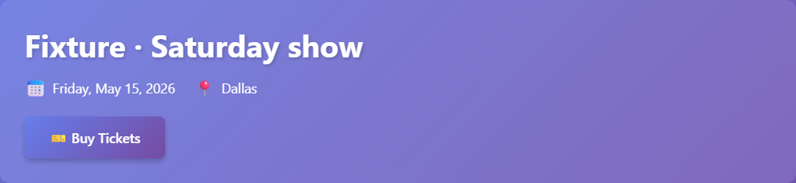

Case file / VibeCheck
Two repairs.
A Dallas show appears a day early. A separate TypeScript error blocks the production build.
6a2349d6acConnecting to the local factory…
Calendar formatting
Keep the show on its advertised day
The event list and detail page both parse a date-only string as midnight UTC and then format it in the viewer’s time zone. In Dallas, that moves a Saturday show to Friday. The patch treats a date-only value as a calendar day and keeps local-time formatting for a timestamp.

Edge screenshots of the React event detail page with the same fixture event in the Dallas time zone. Select either image to enlarge.
| Input / view | Original | Patched |
|---|---|---|
| May 16 · event list | Fri, May 15, 2026 | Sat, May 16, 2026 |
| May 16 · event detail | Friday, May 15, 2026 | Saturday, May 16, 2026 |
| 03:00 UTC May 16 · both views | Friday, May 15 | Friday, May 15 |
The six checks cover a May show date, January 1 and a timed UTC event on each view. The probe executes the formatter functions from the two checked-out source files.
Frontend build
Restore the Vite environment types
The API client reads import.meta.env.VITE_API_URL. The original project lacks the Vite client type declaration. TypeScript stops at the API client before Vite can bundle the app.
A new src/vite-env.d.ts references vite/client. With this repair alone, npm run build passed TypeScript checking and Vite transformed 112 modules. Local verification installs frontend dependencies in a disposable checkout before running the same build.
What these checks cover
The results cover the Dallas date formatters, an event rendered with fixture data in Edge, and the frontend build at the pinned commit. The live backend and Spotify integration require a separate run. To reproduce the formatter or build result, load its patch and run the project checks on the factory floor.
Return to factory floor →